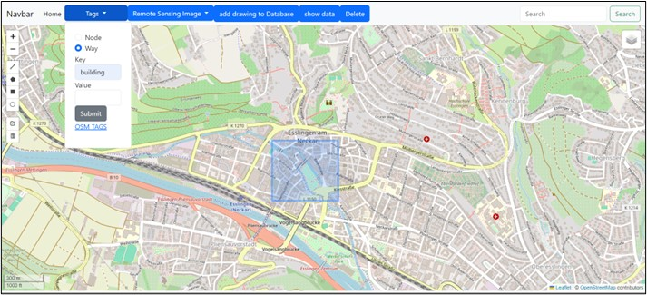
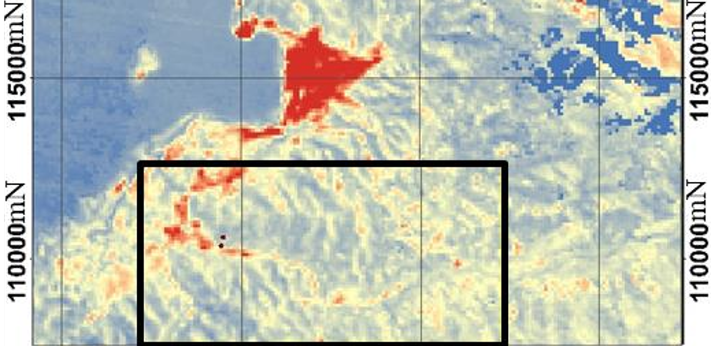
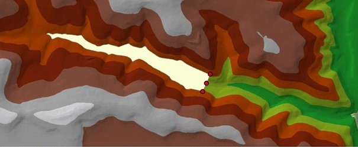
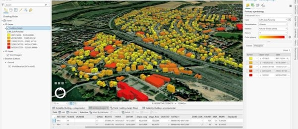
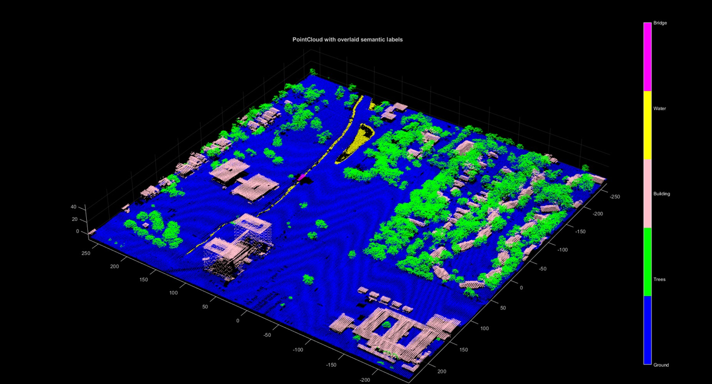

Single Page Application that is built for natural disaster impact area marking and analysis.
Intergrating open-source data from OpenStreetMap and Google Earth Engine and comparing the performance of Geoserver and new technology, ldproxy.
Allowing users to retrieve vector and remote sensing data and to delineate and to analyze the impact of disaster.
Awards: Selected for oral presentation at 9ICCGIS 2024 Conference in Nessebar, Bulgaria, on 16-21 June
Keywords: Web-GIS Development, Natural Disaster, Performance Comparison
Key-skills: Web-GIS Development, html, css, javascript, leaflet, nodejs, PostgreSQL, OpenStreetMap, Google Earth Engine, Remote Sensing

A technique to detect hotspring area using Landsat 8, ASTER, and Sentinel to overcome the large exploration area.
Landsat 8 is used for detecting wet area by generating Normalized Difference Water Index (NDWI).
ASTER is used for detecting the Surface Thermal anomaly.
While Sentinel radar image is used for finding Geological Structure.
Those three is combined resulting on reducing exploration area by 40%.
Awards: Published in Bulletin of Geology in October 2019
Keywords: Geothermal, Remote Sensing, Image Processing
Key-skills: Remote Sensing, Image Processing, Image Analysis, Envi, ArcGIS, GIS, Geological Field Mapping

This project aims to analyze the unit hydrograph, to model the Dam area and volume in 2 cases, Dam elevations 847m and 880m, and to see it in 3D view mode. Data used is river, height point, pour points, contour vactor data.
The general work flow is firstly DEM and Watershed generation. Then to calculate the flowtime needed for the unit hydrograph, Flow length and Flow velocity are produced. For the volume and water area calculation, TIN surface and contourline in respective elevations are used.
Keywords: Hydrological Modeling, Map Algebra, Viershed Analysis, Dam Volume Calculations, 3D Views.
Key-skills: GIS Hydrology Analysis, Flow length Generation, Watershed Generation, Flow time Map Generation, 3D Model Data Visualization, ArcGIS/QGIS

Point Cloud data from Lidar and building footprint are used for making the raster roof model, which helps in analyzing the roof suitability for the solar panel.
The analysis takes into consideration the roof slope, slope direction, flatness, and roof area.
AHP-weighted overlay method is conducted and solar potential also calculated.
It is suceeded to classify building into 5 category from most suitable and less suitable and to calculate the potential energy generated in each category.
Keywords: Location intelligence, Renewable Energy, Lidar data Processing, Raster Analysis, Surface Tools from Spatial Analyst, 3D City Model
Key-skills: GIS Location Suitability Analysis, Analytic Hierarchy Process, Weighted Overlay, Raster Processing, 3D City Model, Point-Cloud, ArcGIS/QGIS

Using PointNet++ deep learning architecture for conducting semantic segmentation in urban areas from Point Cloud data. Targeting 5 classes, Ground, Trees, Bridge, Buildings, and Water,
by researching which hyperparameters (Train data, Mini Batch, Epoch, NumPoint, and Block Size) have optimum accuracy.
Keywords: Semantic segmentation, 3D point clouds, PointNet++, Training hyperparameters, Spatial data analysis.
Key-skills: Machine Learning, Deep Learning, 3D Point-Cloud Processing, Matlab